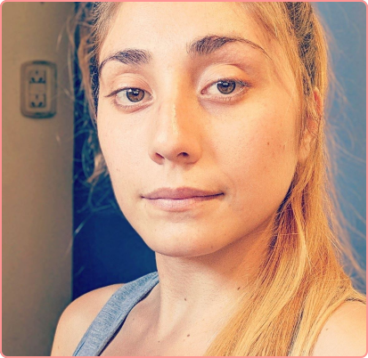

Nombre y Apellido
María Alejandra Sánchez Tejeda
Carrera
Licenciatura en Gestión de Tecnologías
Curso
2763
Proyecto
Sitio profesional: MUNDO UX/UI
Descripción
Mundo UX/UI tiene como objetivo demostrar que el Diseño UX/UI es una parte fundamental en las organizaciones, proyectos y soluciones.
Prototipo
FIGMASitio
URL del sitioRepositorio
Repositorio .git